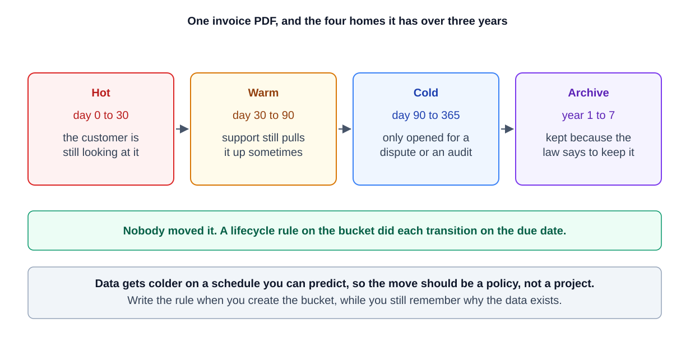
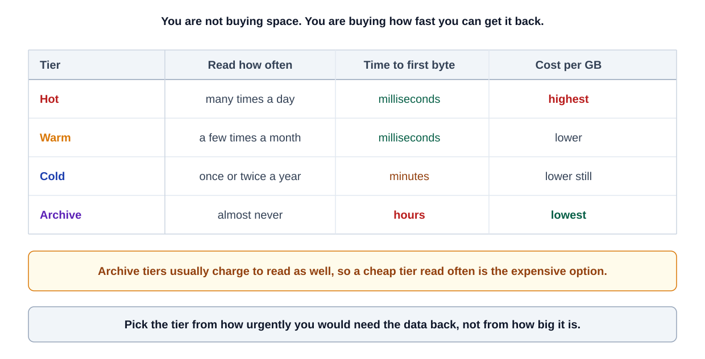

0% completed
What Are Hot, Warm, Cold, and Archive Storage Tiers, and When Should I Use Each?
On This Page
Understanding Storage Tiering and Data Lifecycle
Hot Storage (Fast, Frequently Accessed Data)
Warm Storage (Moderately Accessed Data)
Cold Storage (Rarely Accessed Data)
Use Cases (When to Use Cold Storage):
Archive Storage (Very Rarely Accessed, Long-Term Preservation)
Use Cases (When to Use Archive Storage):
When to Use Each Tier (Quick Recap)
Hot, warm, cold, and archive storage tiers are categories of data storage that differ in access speed and cost, ranging from hot storage (fast and for frequently accessed data) to archive storage (slow and low-cost for rarely accessed data).
In other words, data you use often is kept in “hot” storage for quick access, whereas data you hardly ever use is kept in “cold” or “archive” storage to save costs.
Organizing data into these tiers (a practice known as tiered storage) is important for optimizing performance and storage cost: fast storage is expensive, so it’s used only for frequently accessed (hot) data, while less active data is moved to cheaper, slower tiers.
Many cloud providers (like AWS, Azure, Google Cloud) offer tiered storage classes under different names (e.g. Hot, Cool/Warm, Cold, Archive) to help manage data lifecycles efficiently.
Think of storage tiers like storing items in your home. Your everyday essentials stay on your desk within arm’s reach (hot storage). Items you use occasionally go in a nearby cupboard (warm storage).
Things you rarely need might be packed in a box in the garage (cold storage).
Finally, things you almost never need but must keep (like old records) are sent to an off-site storage locker (archive storage). This way, you pay for quick access only where necessary and save space/cost for rarely used items. The same principle applies to data storage.
Understanding Storage Tiering and Data Lifecycle
Not all data is equal. Some data needs lightning-fast access, while other data can tolerate delays.
Storage tiering means classifying and storing data based on how frequently and how quickly it needs to be accessed.
Typically, “hot” data (recent, active information) resides in a high-performance primary storage tier, and as data becomes older or accessed less, it moves to “warm” or “cold” secondary tiers, and eventually to an archival tier for long-term retention.
Using a mix of tiers lets organizations balance speed vs. cost: ideally, critical active data is on fast (but costly) storage, while idle historical data sits on cheap storage.
Many companies implement automatic policies to migrate data through these tiers over time, for example, a new file might start in hot storage, then move to warm storage after a month of no access, and later to cold storage or archive if untouched for a year.
This tiered strategy ensures you’re not wasting expensive resources on data that just isn’t being used regularly.
Below, we break down each storage tier, Hot, Warm, Cold, and Archive, explaining their meaning, characteristics, and when to use each.
We’ll also mention common scenarios and examples (including cloud storage classes) to illustrate how to apply each tier in practice.
Hot Storage (Fast, Frequently Accessed Data)
Hot storage is the fastest and most expensive storage tier, intended for data that needs immediate and frequent access.
Hot data is your “active” data, things like live databases, recent transaction records, operational datasets, or any information users and applications are accessing in real time.
In hot storage, low latency (quick response time) and high throughput are key; it’s optimized for performance so that retrieving or updating data happens almost instantly.
Key Characteristics of Hot Storage:
-
High Performance & Low Latency: Hot storage is often backed by high-speed media like SSDs or even in-memory storage, providing rapid read/write access. This ensures minimal delay when an application requests the data.
-
Frequently Accessed Data: It’s used for data that is accessed very frequently or continuously (multiple times a day or hour). For example, customer account info on an e-commerce site or the latest log entries in a monitoring dashboard would be hot data.
-
Higher Cost (but Low Access Cost): Storing data in a hot tier typically costs more per GB because you’re paying for premium performance and constant availability. However, there are usually no extra fees to access the data since frequent access is expected (cloud “hot” tiers have the highest storage cost but the lowest access cost).
-
Online and Redundancy: Hot storage is “online” (immediately accessible) and often stored with robust redundancy for reliability, since losing active data is unacceptable. For instance, cloud hot storage or primary databases may replicate data across multiple servers.
Use Cases (When to Use Hot Storage):
-
Mission-Critical Applications: Use hot storage for production databases, transactional systems, or any workload where a delay is unacceptable. e.g. Online transaction processing (OLTP) systems, real-time analytics, and operational data stores rely on hot storage for snappy performance.
-
Current Working Data: Datasets that your team or software is actively working on belong in hot storage. For example, a video editing team’s active project files or a machine learning pipeline’s current training data should be in a hot tier for fast reads/writes.
-
Caching and Session Data: Frequently accessed cache data, session state, or other high-read workloads (like content in a CDN edge cache) are essentially hot data, stored in fastest media to serve users quickly.
-
High-traffic Content: Any content that gets accessed by users very often (popular website content, recent media files) should reside in hot storage for instantaneous delivery.
In summary, hot storage = fast but pricey.
It’s your go-to for “hot” (active) data that needs to be readily available at all times.
Keep only the most frequently used data in this tier to maximize cost-effectiveness.
Learn about high availability.
Warm Storage (Moderately Accessed Data)
Warm storage (sometimes called “cool” storage or nearline storage) is the middle tier between hot and cold. It’s meant for data that is accessed occasionally or periodically, but not constantly.
Warm data still needs reasonably quick access, just not as instantly as hot data, and it’s not accessed enough to justify the highest cost tier. This tier provides a balance between cost and performance. It’s slower and cheaper than hot storage but faster than true cold storage.
Key Characteristics of Warm Storage:
-
Moderate Performance: Warm storage is often implemented on slightly slower or high-capacity media (e.g. enterprise HDDs or slightly lower-tier cloud storage) since ultra-low latency isn’t as critical. Retrieval times are still pretty fast (typically milliseconds or seconds), but maybe a bit more latency than hot storage.
-
Infrequently Accessed Data: Ideal for data that you don’t access every day, but perhaps weekly or monthly. For example, business reports, older project files, or the last quarter’s logs might be warm data. You might need them occasionally for analysis or audits, but not constantly.
-
Lower Storage Cost (with Some Access Cost): Warm tiers usually cost less per GB than hot storage, but may incur slightly higher access costs or retrieval fees when you do read the data. Cloud providers often require keeping data in a warm (cool) tier for a minimum duration (e.g. 30 days) or charge for early deletion, reflecting that it’s optimized for infrequent use.
-
Online and Available: Unlike archive storage, warm storage is still online and immediately accessible when needed. The availability might be slightly lower than hot storage (in cloud SLAs) and throughput maybe a bit reduced, but it’s readily reachable without special restoration processes.
Use Cases (When to Use Warm Storage):
-
Occasional Data Access: Use warm storage for data that users or systems read occasionally. For instance, a company’s quarterly sales records or last month’s user activity logs could be kept warm, accessible for analysis or customer support, but not needed in real-time daily.
-
Reporting and Analytics: Historical data that feeds periodic reports or trend analysis fits here. E.g. a BI (Business Intelligence) system might keep the last year’s data in warm storage: it’s not hot since reports run monthly, but you still want it online for when analysis is run.
-
Backup and DR Staging: Some backups can be stored in a warm tier, especially recent backups that you might need to restore quickly. Similarly, disaster recovery (DR) data that might be needed on short notice (but hopefully infrequently) could live in warm storage for faster recovery than if it were in deep archive.
-
“Active Archive”: The warm tier is often considered an active archive, data that is archived but still actively available for use. For example, an email system might keep last year’s emails in warm storage as an archive that users can still search with slight delay. This concept of active archiving means data is archived (not in primary storage) but not “offline”. It’s a perfect warm storage scenario.
-
Mergers or Data Migration: In cases like mergers or data migrations, warm storage can temporarily host data brought in from legacy systems. It can provide read-only access to data stored in different formats across legacy systems during such transitions.
Overall, warm storage = compromise tier. It’s useful when data isn’t “hot” enough to merit premium storage, but you still need it reasonably quickly when called upon.
Storing moderately used data in warm tiers can significantly cut costs while still meeting access requirements.

Cold Storage (Rarely Accessed Data)
Cold storage is a tier for data that is rarely accessed, perhaps only a few times a year or even less. It’s intended for long-term retention of information that you don’t need often, but when you need it, you still want it accessible within a short time (minutes to hours).
Cold storage emphasizes maximal cost savings at the expense of performance: it’s much cheaper per GB, but reading data may be slower, or may incur notable retrieval costs.
Cold storage is often considered “archive storage” in a broad sense, but we will distinguish that archive tier in the next section as an even colder, offline option.
Key Characteristics of Cold Storage:
-
Low Cost, High Capacity: The main point of cold storage is cost efficiency for large volumes of data you hardly use. It typically has the lowest storage cost per GB among online tiers. This is achieved by using cheaper storage media (like high-density HDDs or inexpensive cloud object storage) and by tolerating lower performance.
-
Slower Access (but Still Online): Cold data can tolerate longer retrieval times. Access latency might be seconds to minutes instead of milliseconds. Importantly, cold storage is usually still online or nearline, meaning the data is stored in a way that it can be accessed without manual intervention, though possibly with some delay. For example, Amazon S3 Glacier (a cold storage service) might deliver data within minutes or hours depending on retrieval options. Azure’s “Cold” tier promises fast retrieval like hot storage, but is intended for rarely accessed data.
-
Rare Access Patterns: Data stored here is expected to be accessed very infrequently (perhaps once a year or less). This could include old log archives, historical records, or backups that are kept just in case. If you find that a supposedly cold dataset is getting accessed frequently, it probably should be moved up to warm or hot. Cold tier is optimized under the assumption of infrequent use.
-
Potential Retrieval Fees: To discourage frequent access, cold tiers often come with data retrieval fees or higher access costs. In cloud storage, you might pay per GB or per request when fetching cold data. Also, many cold storage services have minimum retention periods (e.g. keep data at least 90 days or pay a early deletion penalty).
-
Storage Media: In implementation, cold storage might use slower, high-latency media. For instance, some cold data might be kept on very large but slower hard drives, or even on tape in an automated tape library that can load data when needed. This is often called “nearline storage”, not instantly accessible like a spinning disk that’s online, but can be brought online relatively quickly. Modern cloud cold storage (Glacier, etc.) is actually online but with delayed access by design. On-premises, solutions like tape libraries or optical media can serve as cold storage (with a robot fetching a tape when data is requested, introducing delay).
Use Cases (When to Use Cold Storage):
-
Long-Term Data Archiving: Cold storage is ideal for archives that you must keep for years but rarely look at. For example, a company might keep years of compliance records or historical transaction logs in cold storage for legal retention purposes. If an audit or legal inquiry happens, the data can be retrieved, but day-to-day it’s out of sight.
-
Backups and Disaster Recovery: Many backups after a certain age are best moved to cold storage. For instance, daily backups might be hot for a week (for quick restores), warm for a month, then moved to cold storage after 90 days for long-term safekeeping. They’re available if disaster strikes, but otherwise they just sit cheaply. Cold storage is a common choice for secondary or tertiary backup copies stored off-site.
-
Large Historical Data Sets: Scientific or research data that isn’t actively analyzed can reside in cold tiers. Imagine satellite imagery or genome sequencing data from 5 years ago that researchers want to keep, storing it cold means it’s there if needed for a new study, but it’s not incurring huge costs in the meantime.
-
Regulatory and Compliance Data: If your industry requires keeping records (emails, financial data, medical records) for X years, but you rarely need to access those older records, cold storage is appropriate. It provides the durability and retention needed, at low cost, though retrieval might be slow if you ever do need to dig up those records.
-
Media Archives: Old media assets (video footage, old versions of files) that may be archived for posterity can go to cold storage. For example, a video streaming service might archive last decade’s raw footage or unedited content in cold storage. It’s not driving revenue now, but they keep it just in case (for future documentaries, etc.). If needed, they can retrieve it with some lead time.
In practice, cold storage = “cheap and deep” storage. It’s all about storing large amounts of data at minimal cost.
Performance is a secondary concern. It’s worth noting that if you truly need the data immediately available at all times, it shouldn’t be in cold storage. But for data that can wait a bit when requested, cold storage offers huge cost savings.
(Tip: Cloud examples of cold storage include services like Amazon S3 Glacier, Google Cloud Storage Coldline, and Azure Blob Cold tier. These ensure data durability and availability, but with higher access latency or fees. For instance, AWS Glacier Flexible Retrieval might take minutes or hours to fetch data, and Glacier Deep Archive (even colder, more like an archive tier) can take 12 hours or more. Choose cold classes for data you access “once in a blue moon.”)
Archive Storage (Very Rarely Accessed, Long-Term Preservation)
Archive storage is the lowest tier, designed for data that is hardly ever accessed, kept only for long-term retention purposes (think years or decades), and which can tolerate very slow retrieval.
Archive storage is often offline or near-offline, meaning the data is not immediately accessible without a special restore process.
Because of this trade-off, archive storage is extremely low-cost per unit of data. The cheapest way to store bytes for the long haul.
If hot storage is the race car of data, archive storage is the deep vault in the basement: super cheap to keep stuff in, but it takes effort/time to pull anything out.
Key Characteristics of Archive Storage:
-
Lowest Cost Storage: Archive tiers offer the absolute lowest cost per GB of storage (often by an order of magnitude less than hot storage). For example, cloud archive storage classes like AWS Glacier Deep Archive or Azure Archive can be 90%+ cheaper than hot storage for the same data. This makes it economical to retain large data volumes indefinitely.
-
Offline or Nearline Access: Data in an archive tier is typically not instantly readable. In cloud services, “archive” data is usually stored in a way that requires “rehydration” or restore to an online tier before use. For instance, if you put a blob in Azure’s Archive tier, you must first rehydrate it back to hot or cool tier (which can take hours) before you can read it. Archive storage may reside on physical media like magnetic tape stored offsite, or on very low-access disk that stays spun down. This means latency is very high, retrieval might take hours or even days in some cases (e.g. waiting for a tape to be fetched and mounted).
-
Very Rarely Accessed Data: Archive is for data that you expect not to access at all, barring unusual events. It’s basically write-once, read-never (or read-seldom). Think of it as deep freeze for data. Examples: raw data that must be kept for compliance, but no one looks at it unless an audit happens; historical archives that might only be dug up for special research or legal cases.
-
Long Retention Periods: Archive storage is optimized for long-term retention, keeping data for years+. Cloud archive classes often have minimum retention (e.g. 180 days in Azure Archive), meaning once data goes to archive, you shouldn’t delete or move it for at least that long without incurring penalties. This aligns with use cases like regulatory archives or annual backups that stay for 5-10 years or more.
-
High Durability, Lower Availability: Even though archives are cheap, they often still provide strong durability (multiple copies, etc., since they’re meant to preserve data for a long time). However, availability in terms of quick access is low. You might have to plan ahead to retrieve archived data. Some archive systems even require manual intervention (like retrieving a tape from storage).
-
Possible Manual Processes: In traditional IT, archive could mean literally storing data on tape cartridges and shipping them off to a vault. Accessing that data might require a request to get the tape back. In cloud, it’s automated but still involves a time delay. So archive storage often implies a two-step process to access data: request restore, wait (hours), then access.
Use Cases (When to Use Archive Storage):
-
Compliance and Legal Archiving: Use the archive tier for data you must keep due to compliance or legal requirements, but which you hope to never need. Examples: email records retained for 7 years to meet regulations, financial records required by law, old patient health records, etc.. You’ll only retrieve these in case of audits, lawsuits, or compliance checks.
-
Long-Term Backups (Deep Archive): After backups age beyond a certain point, they can move to archive storage (sometimes called deep archive). For instance, an annual full backup that you keep for posterity (say 7-year retention) can be archived. If an old backup is needed, you’ll accept a multi-hour restore time. AWS Glacier Deep Archive is literally designed for this scenario. Very cheap storage for yearly backups or “digital tape” replacements with 12+ hour retrieval.
-
Historical Data Preservation: Any data that has historical value but not operational value can be archived. For example, raw scientific research data or old project files that might be useful for future reference (like re-analysis many years later) can be archived. They’re preserved safely, but no one is actively using them. Another example: a media company might archive raw footage or old broadcasts in a deep archive; they keep it for posterity or future content creation, but it’s not accessed unless needed for a special production.
-
Digital Preservation: Archives are key for digital preservation efforts, museums, libraries, or large organizations preserving digital records will use archive storage to keep data for decades. Performance is not a factor; integrity over time is. Technologies like tape and emerging solutions (like optical storage or even DNA storage) are considered for deep archives where data might need to last 50+ years.
-
Archive Tier as “Last Resort”: Use archive tier for any data that you have determined “I might never need this, but I’ll keep it just in case.” If you find yourself retrieving archive data frequently, that’s a sign it shouldn’t be in archive. It should be in a higher tier. Archive storage is for true cold storage that mostly just sits idle.
To sum up, archive storage = ultra-cold, cheapest storage for data you rarely touch.
Only commit data to this tier if you’re confident you won’t need it often, and you can tolerate significant delays when you do. It’s perfect for compliance archives, deep backups, and historical records that you’re obligated (or desire) to retain but not actively use.
The benefit is huge cost savings and secure long-term retention; the trade-off is convenience and speed (you trade instant access for a lower bill).
(Cloud examples: Azure Archive Blob Storage, AWS S3 Glacier Deep Archive, and Google Cloud Archive storage class. Azure explicitly labels Archive as offline with hours of latency, and AWS Deep Archive offers 12+ hour restore times. These services charge very low per-GB storage costs, but you must plan restores since data isn’t immediately available.)

When to Use Each Tier (Quick Recap)
To decide which tier to use for a given set of data, consider how quickly and how often you’ll need that data:
-
Hot Tier (Use for “Now” Data): If data is actively in use, driving real-time applications or frequent user queries, keep it hot. Examples: live application databases, current month’s logs, active customer data. Choose hot when low latency is critical.
-
Warm Tier (Use for “Recent” Data): If data is a bit older or less critical but still accessed occasionally (perhaps on a schedule or for periodic analytics), warm storage is a cost-saving choice. Examples: last quarter’s sales data, infrequently used media files, recent but not current backups. It’s a balance, accessible without huge delay, but cheaper than hot.
-
Cold Tier (Use for “Rare” Data): If data likely won’t be needed unless something specific happens, and even then not urgently, cold storage fits. Examples: archives of year-old logs, older backups, infrequently accessed archival footage. You still plan to retrieve it if needed (within minutes or hours), so it remains online/nearline, just very cheap and slow. Accept some performance hit and retrieval cost in exchange for lower storage bills.
-
Archive Tier (Use for “Almost Never” Data): If data is being kept just in case or for compliance, and you don’t foresee needing it, push it to archive. Examples: regulatory records that must be saved for 7+ years, old project files or research data that might be useful decades later, backup tapes for disaster scenarios. You’ll save a lot of money storing it, but expect to wait many hours or days when you really need to fetch it (if ever).
Often, an enterprise will employ multiple tiers together as part of a comprehensive storage strategy.
Fresh, mission-critical data starts in the hot tier, then gradually “cools off” to warm, cold, and archive as its access needs dwindle over time. This ensures that at each stage of its life, data is stored cost-appropriately. By using the right tier for the right data, you get the performance where it counts and savings where they’re possible.
0 Comments
No comments yet. Be the first to start the discussion!
Reading Progress
0%
On This Page
Understanding Storage Tiering and Data Lifecycle
Hot Storage (Fast, Frequently Accessed Data)
Warm Storage (Moderately Accessed Data)
Cold Storage (Rarely Accessed Data)
Use Cases (When to Use Cold Storage):
Archive Storage (Very Rarely Accessed, Long-Term Preservation)
Use Cases (When to Use Archive Storage):
When to Use Each Tier (Quick Recap)